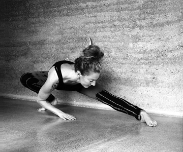

 
Shadow Yoga has grown from its founder Zhander Remete's knowledge and practical understanding of the ancient Hatha Yoga texts, Hatha Yoga anatomy and physiology, the Indian energetic system (marmasthana) and the Chinese energetic system.
The system of Shadow Yoga re-introduces the age-old concept of preparing the physical (gross) body and cultivating the energetic system (subtle body) and correct breathing before the introduction of working the traditional asanas (seats).
This is achieved through moving sequences or 'preludes' which have been inspired by Zhander's extensive personal studies of yoga, martial arts, dance and the observations and recognition of nature. Through these preludes blockages in the body are recognised and broken down, stiffness is removed from the joints, correct breathing is cultivated and co-ordination and rhythm are brought to life in a way that is challenging yet safe and teaches the body to move naturally.
The sequences of the 3 shadow yoga preludes consist of movements that are circular and spiralling (warrior forms), and linear (sun forms). They utilize the principles of the marma point system (marmasthana, 108 vital junctions in the body) as a guide to prepare the body for asana-vinyasa and cultivate the unobstructed flow of the breath that is 'the key' for success in yoga practice and asana work.The practice builds up gradually through the 3 preludes bringing to life an inner connection through movement that cultivates sensitivity and awareness, connections between physical movements and the breath, bridging the gap between the physical body and the subtle.
Shadow Yoga Preludes
The Balakrama - stepping into strength
A dynamic leg working form that builds strength and stamina, strengthens the bone and develops the co-ordination of the hands, feet, and breath together. The legwork improves the downward energy bringing grounding and stability. Uddiyana Bandha is introduced to cultivate the breath, stimulate the inner fire (agni) and teach the body to engage from the centre.
Chaya Yoddha Sanchalanam - churning of the Shadow Warrior
This flowing and spiralling form refines co-ordination and movement of the breath. The work of the warrior and sun forms deepens combined with the legwork the hips and waist come to life, energy within the body is 'stirred', or moved, through the energetic channels.
Kartikkeya Mandalam - Garland of Light
This form moves in a circular flow of demanding stances with deep waist work and a longer length of breath. It releases deeply held restrictions, particularly in the upper back, chest and shoulders, develops, refines, and directs the internal energy and prepares the yoga aspirant for asana work.
These preludes cultivate and encourage the yoga student's own inherent pattern of natural movement to emerge and become a guide in the cultivation towards the practice of individual freestyle.